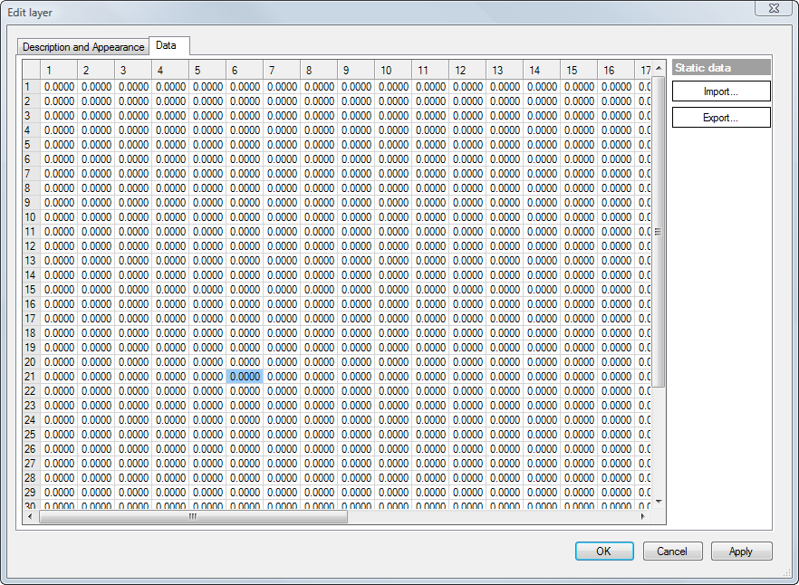
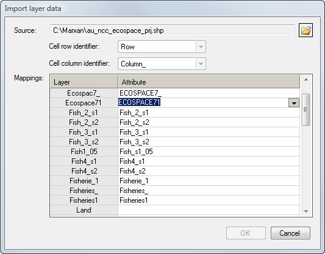
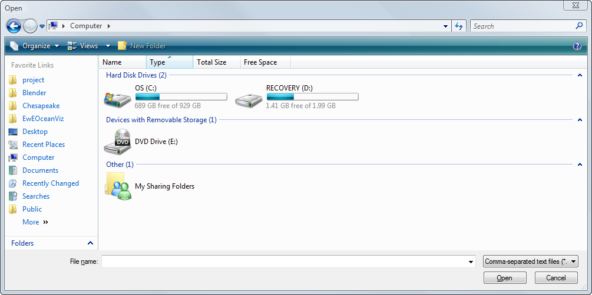

When Importance layer has been selected on theSpatial optimizations form, the Layers panel on the Map Input tab is used to set Importance layers. Importance layers are used to give greater importance to certain cells during random selection of seed cells during the Spatial optimization procedure.
NOTE: Importances in importance layers have no effect on calculation of the objective function (see Spatial optimizations procedures). There are a number of ways to read in data for setting importance layers, listed here.
1. To read in importance layers, make sure you have first, loaded an Ecosim and Ecospace scenario, and opened the Spatial optimizations form. After setting input parameters and selecting Search type: Importance layer on the Configuration tab, go to the Map Input tab.

The Layers panel on the Map Input tab of the Spatial optimizations form (Importance layer configuration).
2. In the Layers panel, double click on the layer for which you want to import data (highlighted in the image above). This will open the Edit layer dialogue box. You can use this dialogue box to edit the description and appearance (i.e., display colour) of the importance layer.
IMPORTANT NOTE: You must also assign the layer a Weight on the Description and Appearance tab (see image below). Importances are normalised within each importance layer. Therefore the Weight assigns relative importance of layers relative to one another.

The Edit layer dialogue box (Description and Appearance tab), before data entry.
3. Next, click on the Data tab (image below). The tab contains a spreadsheet with exactly the same row and column configuration as the Ecospace Base map. Numbers entered into the cells on the Data tab represent relative importance weights for each cell within the layer. Note that the routine will normalise all values on the sheet, so only relative values are required (i.e., units are unimportant).
NOTE: There are two methods to enter data into the Data tab.
In the first method, copy and paste cells directly from a spreadsheet into the cells on the Data tab. Note that the data must be in exactly the same configuration as the cells in the base map. Assign greater importance to the cells of conservation interest (e.g., marine mammal breeding habitat; fish nursery areas; known habitat of rare species). Assign zero importance to cells of no conservation interest and land cells. After entering data this way, close the dialogue box and return to the Spatial optimizations form.
In the second method, Ecospace can read in raster files with spatial information such as importance layers or other Ecospace base map layers. It is possible to read from comma separated text files (.csv), ESRI ASCII files (.asc), and ESRI shape files (.shp).
To use this method, first click on the Import ... button on the Data tab. This will open the Import layer data dialogue box. Proceed to Step 4 below.

The Edit layer dialogue box (Data tab), before data entry.
4. Click on the Open icon [ ] on the Import layer data dialogue box (image below) and navigate to the location of the data file.
] on the Import layer data dialogue box (image below) and navigate to the location of the data file.
NOTE: at the bottom right of the Open dialogue box, there is a pull-down menu labelled Comma separated text file (see bottom image below). Use this pull-down menu to select the type of file (.csv, .asc, .shp) you will be importing. Click Open to open the file you wish to import.
IMPORTANT: To correctly import shape files, files must have row and column attributes identified and must have the same dimensions as the base map.
Use Cell row identifier and Cell column identifier to select the attributes of the rows and columns in the shape file. Note that shape files may have several layers (e.g., see image below). These will be displayed in the Mappings panel of the dialogue box.
Select OK to close the Import layer data dialogue box. Select OK again to close the Edit layer dialogue box. Imported layer(s) will now be visible on the Layer panel of the Map Input tab.
Click here to return to the Spatial optimizations documentation.

The Import layer data dialogue box.

The Open dialogue box. Note the Comma separated text file pull-down menu at the bottom right.